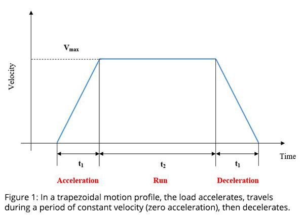
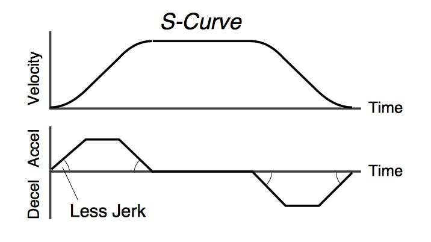

03_Filters - Filters: Notch and smoothing
1. Definition and purpose
A servo filter modifies selected frequency components or the dynamic behaviour of a signal inside a servo control system. Filters are used to reduce unwanted noise, suppress mechanical resonance, or smooth abrupt motion commands.
A servo axis may oscillate because its mechanical structure has a natural resonance, its command profile is too aggressive, its feedback signal is noisy, or its control-loop tuning is unsuitable. These problems can look similar from the outside, but they do not have the same cause.
The correct filter depends on the source of the problem and the signal path where the filter is applied.
Main purposes:
- Reduce oscillation caused by a known mechanical resonance.
- Attenuate unwanted high-frequency noise.
- Smooth abrupt command transitions to reduce mechanical shock.
- Improve motion quality without unnecessarily sacrificing speed or positioning performance.
- Help achieve stable control when the mechanical system has limitations.
Important principle: A filter can reduce a symptom without correcting its cause. A loose coupling, damaged bearing, incorrect encoder wiring, poor grounding, or excessive mechanical backlash should not be hidden behind a filter parameter.
2. Where filters fit in a servo system
A typical servo drive uses nested control loops. The exact arrangement and filter locations depend on the manufacturer and drive model.
Motion Controller
|
v
Position Command
|
v
Command Smoothing / Filter
|
v
Position Controller <---------- Actual Position
| ^
v |
Velocity Reference |
| |
v |
Velocity Controller <--------- Actual Velocity
| ^
v |
Torque / Current Reference |
| |
v |
Current Controller <----------- Motor Current
| ^
v |
Servo Motor --------------------------+
|
v
Mechanical Load
|
+------ Encoder feedback
This is a conceptual diagram, not a universal drive architecture. Some drives place filters inside specific control loops, apply filters to references or feedback, or provide configurable resonance-suppression functions.
Common filter categories
| Filter type | Typical purpose | Main trade-off |
|---|---|---|
| Notch filter | Attenuate a narrow frequency band around a resonance | Incorrect settings may reduce useful response |
| Low-pass filter | Attenuate higher-frequency components more broadly | Adds delay and phase lag |
| Command smoothing filter | Smooth abrupt changes in the reference command | Can increase move time and tracking lag |
| Moving-average filter | Average recent samples to reduce fluctuations | Can blur fast changes and add delay |
| Feedback filter | Reduce selected noise in measured signals | May slow the control response |
| Torque/current signal filter | Modify selected components in torque or current-related paths | Can affect dynamic response and disturbance rejection |
The names and available functions vary across servo drive families. Never assume that a parameter with the same name has the same meaning or location on two different drives.
3. Noise versus mechanical resonance
This distinction is essential before adjusting any filter.
3.1 Signal noise
Noise is an unwanted variation in a measured or transmitted signal. It may come from:
- Electromagnetic interference from motors, contactors, VFDs, welding equipment, or switching power supplies.
- Poor encoder cable shielding, grounding, routing, or connector condition.
- Electrical supply or signal-integrity problems.
- Encoder faults, electrical faults, or measurement limitations.
- Quantization and sampling effects in the control system.
For example, a servo encoder signal may show erratic fluctuations even while the motor shaft is mechanically steady.
The first checks should be the feedback signal, encoder connections, cable routing, shielding, grounding, connectors, and relevant drive diagnostics. A suitable feedback filter may help with residual noise, but it should not replace those checks.
3.2 Mechanical resonance
Mechanical resonance is an oscillatory response near a system's natural frequency. It can arise from the interaction of mass, stiffness, damping, and mechanical geometry.
Common sources include:
- Flexible machine frames or mounting brackets.
- Belt-driven axes and belt tension.
- Couplings, gearboxes, and long shafts.
- Large or flexible payloads.
- Backlash or mechanical looseness.
- Long unsupported structures.
For example, a servo-driven transfer unit may vibrate at a particular frequency when it accelerates or settles at its target. The vibration may be caused by the frame and payload acting as a flexible mechanical system.
A notch filter may reduce a confirmed resonance, but loose fasteners, damaged bearings, worn couplings, and excessive belt movement require mechanical correction.
3.3 How to distinguish them
| Observation | Possible interpretation | Investigation |
|---|---|---|
| Vibration is concentrated around a repeatable frequency | Mechanical resonance is possible | Capture drive scope or frequency-response data |
| Actual position fluctuates while the shaft appears stationary | Feedback noise or small physical oscillations | Compare encoder data, torque, and physical movement |
| Vibration changes substantially with payload | Load-dependent mechanical resonance | Compare empty and loaded operation |
| Vibration increases with acceleration or jerk | Command excitation or mechanical resonance | Review the trajectory and captured response |
| Erratic feedback changes with nearby electrical equipment | EMC or signal-integrity problem is possible | Inspect wiring, shielding, grounding, and signal quality |
| Vibration persists with the drive disabled | A mechanical or external vibration source may be involved | Use the machine's approved safe diagnostic procedure |
These are clues, not proofs. The drive's recorded signals and a safe mechanical inspection provide stronger evidence than guessing from sound alone.
4. Notch filter
A notch filter attenuates a narrow frequency band while allowing frequencies outside that band to pass with comparatively less attenuation.
Its main servo application is suppressing a known mechanical resonance that causes oscillation or ringing.
Conceptual frequency response
This is a conceptual illustration, not measured data from a specific servo drive.
4.1 How it works
Suppose a servo-driven positioning axis has a mechanical resonance near 180 Hz. When the control system excites that frequency, the axis may oscillate or ring.
If the resonance is confirmed and the drive supports suitable notch filtering, a notch centred near the measured resonance can reduce the signal components responsible for the oscillation.
The objective is to suppress the problematic frequency without unnecessarily attenuating the rest of the control response.
4.2 Common notch parameters
| Parameter | Meaning | What happens if unsuitable |
|---|---|---|
| Centre frequency | Frequency around which attenuation occurs | The filter may miss the actual resonance |
| Depth or attenuation | How strongly the selected band is reduced | Excessive attenuation can affect useful response |
| Bandwidth | Range of frequencies attenuated | Too narrow may miss a drifting resonance; too broad may reduce useful response |
| Quality factor, Q | Describes how selective the notch is in many filter designs | Higher Q generally means a narrower notch for a given centre frequency |
Not every drive exposes all these parameters. Some automatically identify resonance and configure the suppression filter.
4.3 Correct tuning approach
- Identify the oscillation under controlled, approved test conditions.
- Capture actual position, commanded position, velocity, torque/current, and following error where available.
- Determine the dominant oscillation frequency using the drive's frequency-response tool, trace function, or suitable measurement equipment.
- Check mechanical condition and confirm that the resonance is not being confused with feedback noise.
- Configure the supported notch function using the manufacturer's procedure.
- Test the same movement before and after the change.
- Verify settling time, following error, torque demand, vibration, and stability over representative loads and speeds.
Do not guess a notch frequency from the sound alone. Auditory frequency estimates are not a commissioning instrument, however confident someone sounds while making them.
4.4 Limitations
- The resonance frequency may change when the payload, mounting, belt tension, or mechanical structure changes.
- A notch at the wrong frequency may have little effect.
- Excessive or poorly placed filtering can reduce useful control response.
- Multiple resonances may require different corrective actions or additional supported filters.
- A notch does not repair looseness, backlash, bearing damage, or a defective encoder.
5. Low-pass filter
A low-pass filter (LPF) passes lower-frequency components more readily and attenuates higher-frequency components.
It is useful when unwanted high-frequency content is present in a signal, but it affects a wider range of frequencies than a typical notch filter.
Conceptual low-pass response
Conceptual response: high-frequency components are increasingly attenuated above the cutoff region.
5.1 Cutoff frequency
The cutoff frequency describes the region where attenuation becomes significant according to the filter's design. For a standard first-order low-pass filter, the cutoff frequency is commonly defined at the point where the signal amplitude falls to approximately 70.7% of its low-frequency value, equivalent to −3 dB.
For a first-order filter represented by time constant \(\tau\):
Where:
- \(f_c\) is the cutoff frequency in hertz (Hz).
- \(\tau\) is the time constant in seconds.
Example: if \(\tau=0.01\) s, then
This formula applies to the stated first-order model. Servo manufacturers may use different filter structures and parameter definitions, so do not blindly convert a vendor parameter into this equation.
5.2 Benefits and limitations
Benefits:
- Reduces high-frequency fluctuations in the filtered signal.
- Can make measured signals less noisy.
- May reduce some high-frequency excitation or torque-command variation.
Limitations:
- Adds phase lag, meaning the filtered response is delayed relative to the original signal.
- Can reduce control bandwidth and responsiveness.
- May increase following error or settling time.
- Can hide a genuine high-frequency mechanical or electrical problem if used without diagnosis.
The filter's location matters. Filtering an encoder feedback signal is not equivalent to filtering a motion command. One changes what the controller measures; the other changes what the controller is asked to execute.
6. Command smoothing and trajectory filtering
Command smoothing reduces abrupt changes in the reference signal sent to a servo axis. It is particularly useful when a sharp command transition excites a flexible mechanical structure.
Consider a servo slide carrying a heavy fixture. The axis may reach the commanded position quickly, but the fixture continues vibrating briefly because the frame and payload flex. Reducing abrupt acceleration or jerk may reduce that vibration at its source.
6.1 Trapezoidal versus S-curve motion profiles
Trapezoidal velocity profile

Acceleration changes abruptly at the transition into and out of constant velocity. The resulting changes in acceleration can excite mechanical vibration.
S-curve velocity profile

Acceleration changes more gradually because jerk is limited. This can reduce mechanical shock and excitation of flexible structures.
These are different trajectory strategies, not merely two names for a filter. A motion controller may generate a jerk-limited trajectory directly, or a drive may provide command smoothing separately.
Use the motion profile when the trajectory itself is too aggressive. Use a filter when its specific signal-processing behaviour is appropriate. Applying both without considering their combined effects can make a machine unnecessarily slow.
6.2 Smoothing parameters
Depending on the drive or motion controller, parameters may include:
- Smoothing time or time constant.
- Command-filter cutoff frequency.
- Moving-average window length.
- Jerk limit or acceleration-transition time.
- Filter order or filter type.
These parameters are not interchangeable. A time constant, moving-average window, and jerk limit describe different behaviours.
In general, increasing the smoothing time or window length produces a smoother signal but can increase delay. The actual effect depends on the implementation.
6.3 Industrial example
A robotic transfer axis moves a fixture rapidly into a station. After stopping, the fixture rings for 200 ms.
A sensible investigation is:
- Capture the commanded and actual position, velocity, torque, and following error.
- Check whether the oscillation is related to abrupt acceleration or a distinct mechanical resonance.
- Inspect the fixture, mounting, coupling, and structural stiffness.
- If the command excites the structure, test a less aggressive acceleration or jerk-limited profile.
- If a specific resonance remains, assess the drive's supported resonance-suppression options.
- Compare total move time and settling time before accepting the change.
A smoother command is not automatically a better production cycle. The goal is to meet positioning and settling requirements reliably, not to create the world's most graceful but painfully slow robot.
7. Filter behaviour and practical trade-offs
7.1 Frequency and time
Frequency is measured in hertz (Hz), where 1 Hz means one cycle per second. Angular frequency is measured in radians per second:
A filter's frequency response describes how it changes signal amplitude and phase at different frequencies.
Two effects matter:
- Attenuation: How much the signal amplitude is reduced.
- Phase lag: How much the filtered signal's phase is delayed relative to the original.
Phase lag matters because servo control depends on the timing relationship between commands, measurements, and corrective actions. Excessive lag can reduce stability margins and make the axis sluggish or unstable.
7.2 Why filtering has a cost
| Change | Potential benefit | Potential cost |
|---|---|---|
| Increase low-pass filtering | Less high-frequency variation | More lag and reduced bandwidth |
| Increase command smoothing | Less abrupt motion and mechanical excitation | Longer movement or settling time |
| Narrow a notch around a confirmed resonance | Targeted resonance suppression | May miss a resonance that shifts in frequency |
| Broaden or deepen a notch | Greater attenuation across a wider band | More risk of attenuating useful response |
| Increase moving-average window | Smoother measured signal | Greater delay and reduced responsiveness |
A filter cannot distinguish useful motion from noise if both occupy the same frequency band. It acts according to its design, not according to the importance of the signal.
8. Applications in industrial automation
| Application | Observed issue | Possible approach |
|---|---|---|
| Belt-driven servo slide | Axis oscillates at a repeatable frequency | Check belt tension and mechanics, then assess notch filtering |
| Rotary indexing table | Ringing after reaching a target | Check coupling, load, gains, trajectory, and resonance |
| Robot axis with flexible payload | Vibration increases with payload | Inspect stiffness and payload limits; reassess tuning under load |
| Encoder feedback | High-frequency fluctuations in position | Inspect encoder wiring, shielding, grounding, and feedback quality |
| Transfer unit | Frame vibrates after aggressive acceleration | Adjust acceleration or jerk profile where appropriate |
| Synchronized twin axes | Axes drift during acceleration | Check command timing, filter delays, gearing, and synchronization configuration |
| Torque signal | High-frequency fluctuations | Determine whether they reflect electrical noise, resonance, or real load disturbance before filtering |
Servo control filters should not be confused with electrical output filters used with VFDs, such as motor-output sine-wave or \(dv/dt\) filters. Those serve different electrical purposes.
9. Filter versus gain versus motion profile
These three functions interact, but they solve different problems.
| Function | What it changes | Typical reason to adjust |
|---|---|---|
| Gain | Strength of the control response | Response is too weak, slow, or oscillatory |
| Motion profile | Desired position, velocity, acceleration, and jerk over time | The requested movement is too aggressive or violates cycle requirements |
| Filter | Selected frequency content or signal dynamics | A confirmed resonance or unwanted signal variation needs attenuation |
For example, raising servo gain can improve tracking and disturbance rejection, but it can also excite a mechanical resonance. A notch filter may suppress a confirmed resonance and, on some systems, permit a higher usable gain. That is not guaranteed, and it should only be attempted after identifying the resonance and following the drive manufacturer's tuning procedure.
Practical rule: Diagnose the mechanics and feedback first, correct the trajectory if needed, and then tune the control response and filters systematically. The precise order can vary with the drive's tuning procedure.
10. Filter tuning workflow
Use this process during authorized commissioning or maintenance testing.
1. Record the baseline. Back up the existing drive and controller parameters. Record the fault, operating conditions, payload, speed, acceleration, move time, and settling time.
2. Inspect the machine. Check mounting bolts, couplings, belts, bearings, gearbox condition, backlash, lubrication, and load attachment. Check encoder cables, connectors, shielding, grounding, and routing.
3. Capture useful signals. Where available, record commanded and actual position, velocity, torque/current, following error, and vibration. Include the conditions under which the problem occurs.
4. Classify the problem. Determine whether it is likely to be feedback noise, mechanical resonance, aggressive command transitions, unsuitable control tuning, or a combination.
5. Identify the relevant frequency. Use the manufacturer's frequency-response or resonance-analysis tools, scope traces, or suitable measurement equipment. Avoid guessing.
6. Choose the appropriate correction. Consider a notch for a confirmed narrowband resonance, a low-pass filter for suitable high-frequency noise, or trajectory changes when the command itself excites the machine.
7. Change one variable at a time. Record the parameter name, original value, new value, reason, and observed result. Follow the manufacturer's approved ranges and tuning procedure.
8. Validate under representative conditions. Test relevant speeds, acceleration settings, payloads, and repeated moves. Check stability, position error, torque demand, move time, settling time, and synchronization.
9. Document the final configuration. Save the validated parameter set and document limitations, test conditions, and rollback instructions.
10. Reassess after mechanical changes. A new payload, fixture, belt, coupling, or mounting arrangement can shift resonance frequencies and invalidate previous settings.
11. Troubleshooting guide
| Symptom | Possible cause | Diagnostic direction |
|---|---|---|
| Persistent vibration at one frequency | Mechanical resonance | Confirm frequency, inspect mechanics, evaluate notch filtering |
| Broad high-frequency feedback noise | EMC, encoder signal quality, or measurement noise | Inspect electrical installation and feedback diagnostics |
| Axis becomes sluggish after filtering | Excessive smoothing or low-pass filtering | Review filter location, settings, lag, and move-time impact |
| Axis rings after stopping | Resonance, excessive gain, or aggressive trajectory | Capture traces and inspect mechanics, profile, and tuning |
| Two axes lose synchronization | Different delays or filtering in the axes' signal paths | Compare trajectory timing, filter settings, and controller configuration |
| Position overshoot increases | Control tuning, trajectory, or filter-delay interaction | Compare baseline traces and following error |
| Notch filter makes no noticeable difference | Incorrect frequency, wrong signal path, or wrong root cause | Verify resonance frequency and filter placement |
| Behaviour changes with payload | Load-dependent stiffness or resonance | Repeat diagnostics under representative load conditions |
| Vibration continues with the servo disabled | External vibration or mechanical source may be involved | Follow the safe isolation and inspection procedure |
| Noise disappears but positioning worsens | Filtering removes useful signal content or adds excessive lag | Reassess the filter and correct the underlying source |
No single parameter value is correct for every axis. A setting that works on an unloaded test fixture may perform poorly with a production payload.
12. Safety and commissioning considerations
- Make filter changes only under the site's authorized commissioning and risk-control procedures.
- Do not tune a live production machine without approval and suitable safeguards.
- Independently validate safety functions. A smoother motion response does not establish that a safety function is working.
- Account for vertical loads, gravity, stored mechanical energy, and unexpected movement.
- Preserve a backup and a known recovery procedure before changing parameters.
- Stop testing if the axis becomes unstable, produces unexpected torque, or exhibits worsening vibration.
- Revalidate after changes to payload, mechanics, control software, or drive configuration.
13. Interview questions and answers
1. What is a notch filter?
A frequency-selective filter that attenuates a narrow band around a selected centre frequency. In servo applications, it is commonly used to suppress a confirmed mechanical resonance.
2. What is the difference between a notch filter and a low-pass filter?
A notch targets a narrow frequency band. A low-pass filter attenuates higher-frequency components more broadly.
3. Why do filters introduce lag?
Many filters use previous signal information or have frequency-dependent phase response. The filtered output therefore does not follow every change instantaneously.
4. How do you identify a mechanical resonance?
Capture relevant drive signals, use frequency-response or resonance-analysis tools, and correlate the measured frequency with observed vibration and operating conditions.
5. Why should a filter not be used to hide mechanical looseness?
Looseness is a mechanical defect that may worsen or create safety and reliability problems. Filtering can reduce visible symptoms without repairing the defect.
6. What is cutoff frequency?
For a standard first-order low-pass filter, it is the frequency at which the output amplitude falls to approximately 70.7% of its low-frequency value, or −3 dB.
7. What happens if command smoothing is too high?
The movement may become sluggish, take longer, develop more tracking lag, or fail to meet cycle-time requirements.
8. Why can filters cause synchronization errors between axes?
Different filter delays can create timing differences between axes that must follow coordinated trajectories.
9. What is the difference between a filter, gain, and motion profile?
Gain changes control response strength, the motion profile defines the desired trajectory, and a filter modifies selected signal frequencies or dynamics.
10. How can encoder noise be distinguished from mechanical resonance?
Examine feedback and physical motion together with torque, position error, electrical installation, and frequency-response data. Feedback fluctuations alone do not prove mechanical vibration.
11. Why can resonance frequency change with payload?
Payload changes can alter the effective mass and stiffness of the mechanical system, changing its natural frequencies.
12. How do you validate a notch filter?
Compare baseline and post-change traces, vibration, tracking error, torque demand, settling time, and performance across representative operating conditions.
13. What is phase lag?
Phase lag is the phase difference by which a signal response trails its input at a given frequency. Excessive lag can reduce control stability margins.
14. Can a notch filter allow higher servo gain?
Sometimes. Suppressing a confirmed resonance may allow more aggressive control tuning, but the result depends on the system and must be validated for stability.
15. Can one filter remove every kind of noise?
No. Different disturbances occupy different frequency ranges and signal paths. Filtering also cannot distinguish noise from useful information occupying the same frequency band.
16. Why should the filter location be verified?
A filter applied to a command, feedback signal, or torque reference affects different parts of the control system. The correct parameter depends on where the disturbance originates and how the drive implements the filter.
14. Practical exercises
Exercise 1: Narrowband vibration
A servo-driven indexing table vibrates at a repeatable frequency after each move. The frequency is visible in the drive's recorded response.
Tasks:
- Identify the likely class of problem.
- List the mechanical checks required before tuning.
- Explain how a notch filter could help.
- Define the measurements needed to verify the result.
Exercise 2: Encoder signal noise
The actual-position trace fluctuates while the axis is stationary, and the problem worsens when nearby electrical equipment operates.
Tasks:
- Identify likely electrical and feedback causes.
- Explain why immediately increasing low-pass filtering is not the best first action.
- Describe the checks required before deciding whether feedback filtering is appropriate.
Exercise 3: Sluggish movement
After increasing a smoothing parameter, the axis moves more quietly but takes longer to reach and settle at its target.
Tasks:
- Explain the likely trade-off.
- Identify the original and modified parameters to compare.
- Determine how to decide whether the improvement justifies the additional cycle time.
Exercise 4: Two-axis synchronization
Two servo axes move together. After their smoothing settings are changed independently, their positions no longer match during acceleration.
Tasks:
- Explain how different signal delays can cause the mismatch.
- Identify the trajectory and timing signals to capture.
- Describe how coordinated filter and motion-controller settings should be validated.
Exercise 5: Create a filter tuning record
Use this structure for a real commissioning or troubleshooting record:
| Field | Record |
|---|---|
| Machine and axis | |
| Payload and operating conditions | |
| Original symptom | |
| Baseline parameter backup | |
| Suspected root cause | |
| Measured oscillation frequency | |
| Signal path being filtered | |
| Filter type and parameter changes | |
| Before-and-after vibration | |
| Before-and-after following error | |
| Move and settling time | |
| Validation conditions | |
| Final approved configuration | |
| Rollback procedure |
15. Final mental model
- Notch filter: Suppresses a narrow frequency band, usually to address a confirmed resonance.
- Low-pass filter: Attenuates higher-frequency signal components more broadly.
- Command smoothing: Reduces abrupt command transitions that may excite mechanical structures.
- Feedback filtering: Modifies the measured signal, potentially reducing noise but also delaying useful information.
- Phase lag: The cost that makes excessive filtering dangerous to control performance.
- Correct tuning: Identify the cause, choose the right signal path, change one parameter at a time, and validate the result under representative loads.
The objective is not to make every trace look smooth. It is to achieve stable, accurate, repeatable motion without concealing faults or sacrificing unnecessary cycle time.
Next topic
02_PLAN_WISE_2026\02_INDUSTRY3_0\02_Auto_Tech\06_Servo_Motion\08_Servo_Tuning\04_Auto_Tune
04_Auto_Tune - Auto-tune: Drive-run tuning